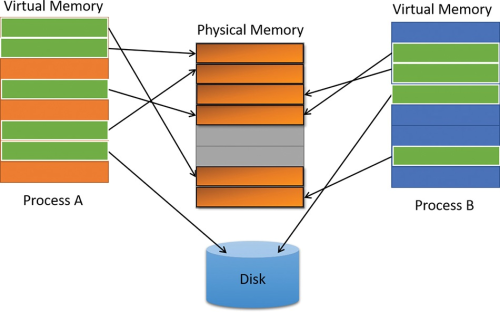

# Physical Address vs Virtual Address vs Relative Virtual Address vs Raw Address
•
https://stackoverflow.com/questions/2170843/va-virtual-address-rva-relative-virtual-address• Physical Address is the address in physical memory/hardware (what the CPU sees)
• Virtual Address is an address in virtual memory (the memory manager maps physical memory to virtual memory)
◇ e.g.
0x40001000• RVA - Relative Virtual Address - is an address relative to a Virtual Address
◇ the specification should tell you what Virtual Address it's relative to
◇ in PE files this is usually relative to the load base address
▪ e.g.
0x1000 - it's
0x1000 bytes from the image's base address
• Raw Address is the address in the file on disk
◇ when a PE file gets mapped into memory- like with
CreateFileMapping - you use the Virtual Address
◇ if you're examining a PE file on disk - like with
ReadFile - you use the Raw Address
◇ sometimes Raw Addresses are also offsets offsets (if you're looking at PE files)
## What's the point of RVAs?
A PE file might not be loaded at it's preferred base address - e.g.
0x00400000Therefore, RVAs are used to find values in the PE file once its been loaded into memory.
To find a Relative Virtual AddressSubtract
base address from
virtual address to find the relative virtual address.
(virtual address)0x00401000 - (base address)0x00400000 = (RVA)0x1000To convert RVA to Virtual AddressTo convert RVA to Virtual Address, add
RVA to
base address(base address)0x00400000 + (RVA)0x1000 = (virtual address)0x00401000## Convert VA to Raw
You can also convert a virtual address to a raw address.
The code below loops through the PE's sections,
and finds which section your
VirtualAddress is in.
It then calculates the
RawAddress by:
• subtracting the start of the section from the
VirtualAddress to find the Relative Virtual Address,
• and adds the RVA to the address of the start of the section on disk
/*
Convert VirtualAddress (address in memory) to raw address (address on disk).
Does so by finding which PE section your VirtualAddress is in,
subtracting the section's start address to find the relative virtual address,
and then adding the RVA to the start of the section on disk.
*/
DWORD va2raw(LPVOID file_buffer, DWORD va)
{
DWORD rva = 0;
DWORD raw_address = 0;
PIMAGE_DOS_HEADER dos_header = NULL;
PIMAGE_NT_HEADERS pe_header = NULL;
PIMAGE_SECTION_HEADER section_header = NULL;
// grab section header
dos_header = (PIMAGE_DOS_HEADER)file_buffer;
pe_header = (PIMAGE_NT_HEADERS)((DWORD_PTR)file_buffer + dos_header->e_lfanew);
section_header = IMAGE_FIRST_SECTION(pe_header);
if (va < section_header->PointerToRawData)
return va;
// loop through sections
for (int i = 0; i < pe_header->FileHeader.NumberOfSections; i++)
{
// find start and end of current section
DWORD section_start = section_header->VirtualAddress;
DWORD section_end = section_header->VirtualAddress + section_header->SizeOfRawData;
// if the provided RVA is within the bounds of this current section
if (va >= section_start && va < section_end)
{
// calculate raw address
rva = va - section_start;
raw_address = section_header->PointerToRawData + rva;
break;
}
// advance to next section
section_header += 1;
}
return raw_address;
}
## About Virtual Memory
Windows processes (.exe) run in Virtual Memory.
That is, each windows process has its own block of Virtual Memory only visible to itself.
Virtual Memory provides each process the illusion that it has its own large, private address space.
This allows executables to always start at the same based address:
•
0x00400000 for 32bit executables
•
0x0000000140000000 for 64bit executables
The Windows memory manager maps a physical memory address to a virtual memory addresses.
